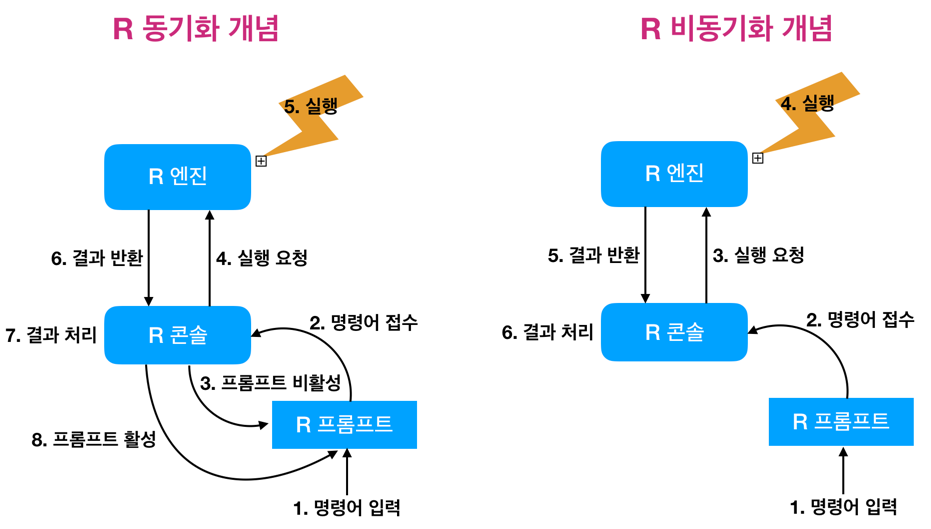

Asynchronous programming in R
들어가기
배경
무거운 모델을 수행할 경우나 heavy한 데이터를 DBMS에서 가져올 경우에, 수십분에서 수 시간의 run-time이 요구될 수 있다. 이런 경우에는 꼼짝없이 해당 작업이 끝나기를 기다린 후 다른 작업을 수행할 수 밖에 없다. 오늘 소개할 포스트는 수십분에서 수 시간의 run-time을 요구하는 작업을 대기 상태없이 수행하여, 바로 다른 작업을 수행할 수 있는 방법을 제시한다.
응용의 실마리
rstudio::conf 2018의 컨퍼런스 세션에서 Joe Cheng의 “Scaling Shiny apps with async programming”에서 Synchronous(비동기화)를 지원하는 future 패키지에 대한 소개를 들으면서 응용의 가능성을 확인하였다.
동기화 R programming을 비동기화 R programming으로 변형한다면, 불필요한 대기 시간없이 원활한 R 분석 작업을 수행하여, 생산성을 높일 수 있게 되는 것이다.
동기화 vs 비동기화
동기화(Synchronous) 프로그래밍이란 프로그램 코드의 작업을 끝마쳐야 다음 프로그램 코드에 제어권을 넘겨주는 방식이다. Blocking 방식으로 현 작업이 완료될 때 까지 대기 상태가 된다.
비동기화(Asynchronous) 프로그래밍이란 프로그램 코드의 작업이 끝마치지 않은 상태에서도 제어권을 넘겨주는 방식이다. Non-blocking 방식으로 현 작업이 완료되지 않아도 대기 상태가 된다.
R에서의 동기화 vs 비동기화
다음 그림은 R에서의 동기화와 비동기화를 설명해 준다. 그런데 R은 기본적으로 동기화 방식으로 프로그램을 수행한다.

Figure 1: Synchronous vs Asynchronous in R
future 패키지
future 패키지는 R에서 비동기화 프로그래밍을 구현해주는 패키지다. 또한 이 패키지는 Parallel 및 Distributed Processing을 지원한다.
동기화
동기화 프로그램의 매커니즘을 확인하기 위해 다음과 같은 사용자 정의함수를 만들었다. 함수가 호출된 후 5초 동안 대기했다가 인자값 x를 반환하는 함수다. 즉 이 함수는 5초 가량의 run-time을 갖는다.
getValue <- function(x) {
Sys.sleep(15)
return(x)
}R은 기본적으로 동기화 매커니즘을 가지고 있으므로 5초 가량 getValue() 함수가 수행된 후에 x의 값 3.141593가 출력된다.
> system.time(x <- getValue(pi))
user system elapsed
0.000 0.000 15.001 > x
[1] 3.141593비동기화
비동기(Asynchronous) 처리를 하기 위해서는 tuture 패키지를 사용한다.
이 패키지는 앞서 Parallel 및 Distributed Processing 기능도 수행한다고 언급했었는데 plan() 함수로 이를 지정할 수있다. 예제에서는 multiprocess를 지정하였다.
> library(future)
>
> plan(multiprocess)
Warning: [ONE-TIME WARNING] Forked processing ('multicore') is disabled
in future (>= 1.13.0) when running R from RStudio, because it is
considered unstable. Because of this, plan("multicore") will fall
back to plan("sequential"), and plan("multiprocess") will fall back to
plan("multisession") - not plan("multicore") as in the past. For more details,
how to control forked processing or not, and how to silence this warning in
future R sessions, see ?future::supportsMulticore
> system.time(x <- future(getValue(pi)))
user system elapsed
0.011 0.000 0.013 future() 함수가 반환한 x 객체는 MulticoreFuture class 객체다.
> is(x)
[1] "MultisessionFuture"
> x
MultisessionFuture:
Label: '<none>'
Expression:
getValue(pi)
Lazy evaluation: FALSE
Asynchronous evaluation: TRUE
Local evaluation: TRUE
Environment: <environment: R_GlobalEnv>
Capture standard output: TRUE
Capture condition classes: 'condition'
Globals: 1 objects totaling 5.48 KiB (function 'getValue' of 5.48 KiB)
Packages: <none>
L'Ecuyer-CMRG RNG seed: <none> (seed = FALSE)
Resolved: FALSE
Value: <not collected>
Conditions captured: <none>
Early signaling: FALSE
Owner process: d49fc19e-1b63-52e8-4faf-af4ab2d22336
Class: 'MultisessionFuture', 'ClusterFuture', 'MultiprocessFuture', 'Future', 'environment'실제 계산된 값을 사용하기 위해서는 value() 함수로 MulticoreFuture 객체를 원래 반환값의 객체로 변환해 주어야 한다.
즉, future() 함수로 던지고, value() 함수로 받아야 한다.
> c
function (...) .Primitive("c")명시적 호출
명시적(Explicit)으로 호출하는 방법은 앞에서 다룬 future() 함수로 던지고, value() 함수로 받는 방법이다. 즉, futures를 사용할 때, f <- future({ expr }) 와 v <- value(f) 방법을 사용한다.
그런데 future() 함수로 호출한 expr이 종료되지 않은 상태에서 value(f)를 실행하면 어떤 결과가 발생할까? 이 경우에는 호출한 value(f)는 expr이 완전히 종료한 후에 값을 반환한다. 그러므로 확실하게 expr가 종료된 경우에만 value() 함수를 사용해야 한다.
expr의 종료여부는 resolved() 함수를 이용하여 확인한다. 만약 future() 함수가 반환한 MulticoreFuture 객체 f를 생성할 때 수행한 expr이 백그라운드에서 종료하면 TRUE를 반환하고, 아직도 백그라운드에서 수행중이면 FALSE를 반환한다. 그러므로 resolved() 함수로 expr의 종료 여부를 확인 후 value()함수를 사용한다.
> system.time(x <- future(getValue(pi)))
user system elapsed
0.006 0.000 0.007
> resolved(x)
[1] FALSE
> Sys.sleep(6)
> resolved(x)
[1] FALSE암시적 호출
암시적(Implicit)으로 호출하는 방법은 v %<-% { expr }처럼 %<-% 연산자를 사용하는 방법이다. 앞에서 다룬 future() 함수로 던지고, value() 함수로 받는 방법을 암시적인 호출로 변경하면 다음과 같다.
> system.time(x %<-% getValue(pi))
user system elapsed
0.009 0.000 0.009 %<-% 연산자를 이용한 암시적인 호출의 결과는 MulticoreFuture 객체가 아닌 expr의 수행 결과의 객체다.
> is(x)
[1] "numeric" "vector"
> x
[1] 3.141593백그라운드 프로세스
future 패키지의 future() 함수나 %<-% 연산자를 호출하면 expr은 백그라운드(Background)에서 수행된다.
getValue2 <- function() {
Sys.sleep(5)
pid <- Sys.getpid()
cat("Resolving ...\n")
return(pid)
}> Sys.getpid()
[1] 14248
> system.time(pid <- getValue2())
Resolving ...
user system elapsed
0.001 0.000 5.000
> pid
[1] 14248%<-% 연산자 expr가 백그라운드에서 수행되기 때문에, 호출된 getValue2() 함수의 cat() 함수의 결과가 출력되지 않는다. 왜냐하면 cat() 함수는 포그라운드(Foreground) 콘솔에 문자열을 출력하는 함수이기 때문이다. 또한 %<-% 연산자가 호출되지 이전의 프로세스 아이디와 expr이 수행되는 환경의 프로세스 아이디가 다름을 알 수 있다.
> Sys.getpid()
[1] 14248
> system.time(pid %<-% getValue2())
user system elapsed
0.007 0.000 0.008
> pid
Resolving ...
[1] 14362Plan
future의 실행 계획(Plan)은 plan() 함수로 지정할 수 있다. 그리고, plan() 함수로 지정할 수 있는 수행 계획은 다음과 같다.
- 동기화
- sequential : 현재의 R 프로세스에서 순차적으로 수행된다.
- transparent : 현재의 R 프로세스에서 순차적으로 수행되고, 호출 환경에 할당이 수행된다.
- 비동기화
- multisession : 동일한 컴퓨터의 백그라운드에서 실행되는 별도의 R 세션에서 expr을 비동기 적으로(병렬로) 수행한다.
- multicore : 동일한 컴퓨터에서 백그라운드로 실행되는 별도의 forked R 프로세스에서 expr을 비동기적으로(병렬로) 수행한다. Windows에서는 지원되지 않는다.
- cluster : multicore 수행을 지원되면 사용되며, 그렇지 않으면 multisession 수행을 사용된다.
- remote : 일반적으로 다른 네트워크에있는 별도의 컴퓨터에서 실행되는 별도의 R 세션에서 expr을 비동기적으로 수행한다.
다음은 동기화 호출인 sequential Plan의 결과로 future() 함수의 수행 시간이 5초 가량 걸렸으며, 반환한 객체 x도 SequentialFuture 객체임을 알 수 있다.
> plan(sequential)
>
> system.time(x <- future(getValue(pi)))
user system elapsed
0.008 0.000 15.010
> is(x)
[1] "SequentialFuture"
> value(x)
[1] 3.141593promises 패키지
promises 패키지는 비동기 작업의 결과에 엑세스할 수 있는 기능을 지원한다.
> library(dplyr)
>
> ggplot2::diamonds %>%
+ filter(cut %in% c("Good", "Very Good")) %>%
+ head(10)
# A tibble: 10 x 10
carat cut color clarity depth table price x y z
<dbl> <ord> <ord> <ord> <dbl> <dbl> <int> <dbl> <dbl> <dbl>
1 0.23 Good E VS1 56.9 65 327 4.05 4.07 2.31
2 0.31 Good J SI2 63.3 58 335 4.34 4.35 2.75
3 0.24 Very Good J VVS2 62.8 57 336 3.94 3.96 2.48
4 0.24 Very Good I VVS1 62.3 57 336 3.95 3.98 2.47
5 0.26 Very Good H SI1 61.9 55 337 4.07 4.11 2.53
6 0.23 Very Good H VS1 59.4 61 338 4 4.05 2.39
7 0.3 Good J SI1 64 55 339 4.25 4.28 2.73
8 0.3 Good J SI1 63.4 54 351 4.23 4.29 2.7
9 0.3 Good J SI1 63.8 56 351 4.23 4.26 2.71
10 0.3 Very Good J SI1 62.7 59 351 4.21 4.27 2.66promises 패키지는 다음처럼 tidyverse의 dplyr의 %>% 연산자에 대응하는 %…>%를 이용하여 promise(future) 객체의 데이터를 액세스할 수 있다.
> library(promises)
>
> future(ggplot2::diamonds) %...>%
+ filter(cut %in% c("Good", "Very Good")) %...>%
+ head(10) %...>%
+ View()